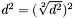

#include <stMetricEvaluator.h>
Public Member Functions | |
| virtual stDistance | GetDistance (stObject *obj1, stObject *obj2)=0 |
| virtual stDistance | GetDistance2 (stObject *obj1, stObject *obj2)=0 |
The class required by stSlimTree to calculate the metric distances must have 2 distinct methods. One of them, GetDistance(), must return the distance itself while the other, GetDistance2(), must return the same value raised by the power of 2.
They are defined as distinct methods because some procedures will require one or both of these values. Since some distance functions may have better algorithms for the distance or distance raised by 2, its better to keep both implementations. For example, the Euclidean function has a better algorithm for the distance raised by 2 than for the distance itself.
This functional separation exists to avoid things such as  which is an undesireble situation because square roots are not cheap.
As an optional function, a metric evaluator is the responsible to compute the number of distances calculated WHEN IT IS REQUIRED (it is not used by the Structure Layer).
The implementation of this feature has no standard interface and may be implemented freely but to make the implementation easier, there is a class called stMetricEvaluatorStatistics that implements the basic functions necessary to accomplish this task.
This class may be used as the base class for classes that implements the metric evaluators which will be used by a metric tree to compute distances but it is not recommended.
Marcos Rodrigues Vieira (mrvieira@icmc.usp.br)
Definition at line 123 of file stMetricEvaluator.h.
|
||||||||||||
|
This method calculates the metric distance between 2 objects.
|
|
||||||||||||
|
This method calculates the metric distance between 2 objects raised by the power of 2.
|